| sample | min | max | mean | variance | skew | kurtosis | normal-t | normal-p | α | |
|---|---|---|---|---|---|---|---|---|---|---|
| abs | 12 | 298 | 915 | 408.17 | 28248.33 | 2.53 | 5.26 | 26.675 | 0.0000 | 0.8557 |
| rel | 12 | 6 | 19 | 8.87 | 13.35 | 2.53 | 5.26 | 26.675 | 0.0000 | 0.8557 |
| sample | min | max | mean | variance | skew | kurtosis | normal-t | normal-p | α | |
|---|---|---|---|---|---|---|---|---|---|---|
| abs | 11 | 278 | 471 | 374.36 | 4875.05 | 0.13 | -1.28 | 1.516 | 0.4686 | 0.7098 |
| rel | 11 | 5 | 9 | 7.49 | 1.95 | 0.13 | -1.28 | 1.516 | 0.4686 | 0.7098 |
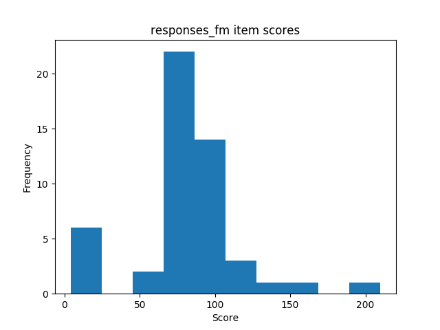 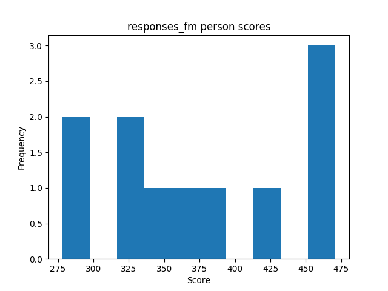
| sample | min | max | mean | variance | skew | kurtosis | normal-t | normal-p | α | |
|---|---|---|---|---|---|---|---|---|---|---|
| abs | 23 | 328 | 1230 | 474.74 | 34192.57 | 3.12 | 10.33 | 41.081 | 0.0000 | 0.8731 |
| rel | 23 | 6 | 24 | 9.31 | 13.15 | 3.12 | 10.33 | 41.081 | 0.0000 | 0.8731 |
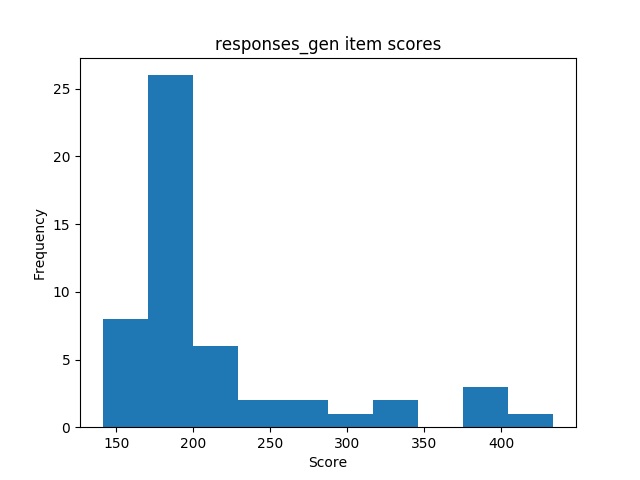 
| sample | min | max | mean | variance | skew | kurtosis | normal-t | normal-p | α | |
|---|---|---|---|---|---|---|---|---|---|---|
| abs | 12 | 35 | 43 | 40.42 | 4.04 | -1.15 | 1.74 | 8.672 | 0.0131 | 0.9106 |
| rel | 12 | 0 | 0 | 0.88 | 0.00 | -1.15 | 1.74 | 8.672 | 0.0131 | 0.9106 |


| sample | min | max | mean | variance | skew | kurtosis | normal-t | normal-p | α | |
|---|---|---|---|---|---|---|---|---|---|---|
| abs | 11 | 43 | 51 | 47.11 | 6.19 | 0.31 | -1.17 | 1.231 | 0.5404 | 0.9511 |
| rel | 11 | 0 | 1 | 0.92 | 0.00 | 0.31 | -1.17 | 1.231 | 0.5404 | 0.9511 |
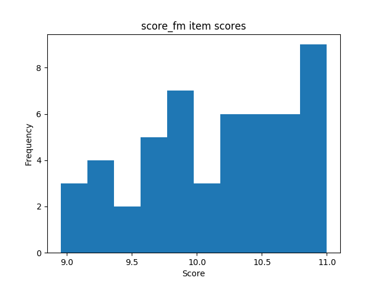 
| sample | min | max | mean | variance | skew | kurtosis | normal-t | normal-p | α | |
|---|---|---|---|---|---|---|---|---|---|---|
| abs | 23 | 40 | 51 | 45.97 | 6.47 | 0.06 | 0.22 | 0.711 | 0.7008 | 0.9459 |
| rel | 23 | 0 | 1 | 0.90 | 0.00 | 0.06 | 0.22 | 0.711 | 0.7008 | 0.9459 |


| sample | min | max | mean | variance | skew | kurtosis | normal-t | normal-p | α | |
|---|---|---|---|---|---|---|---|---|---|---|
| abs | 12 | 1544 | 12345 | 8173.94 | 10611999.29 | -0.77 | -0.33 | 2.156 | 0.3402 | 0.8776 |
| rel | 12 | 33 | 268 | 177.69 | 5015.12 | -0.77 | -0.33 | 2.156 | 0.3402 | 0.8776 |
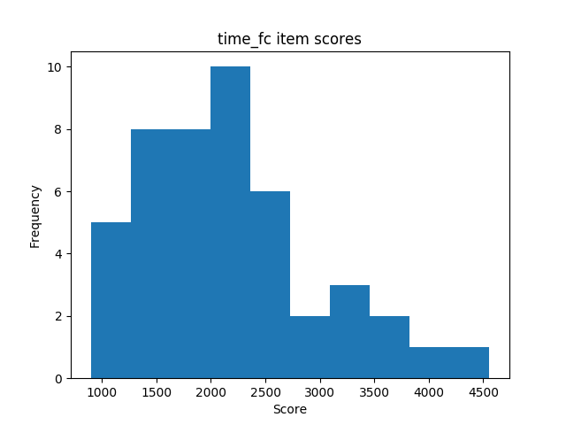 
| sample | min | max | mean | variance | skew | kurtosis | normal-t | normal-p | α | |
|---|---|---|---|---|---|---|---|---|---|---|
| abs | 11 | 1707 | 12233 | 7221.30 | 8917086.17 | 0.05 | -0.44 | 0.092 | 0.9551 | 0.8268 |
| rel | 11 | 34 | 244 | 144.43 | 3566.83 | 0.05 | -0.44 | 0.092 | 0.9551 | 0.8268 |
 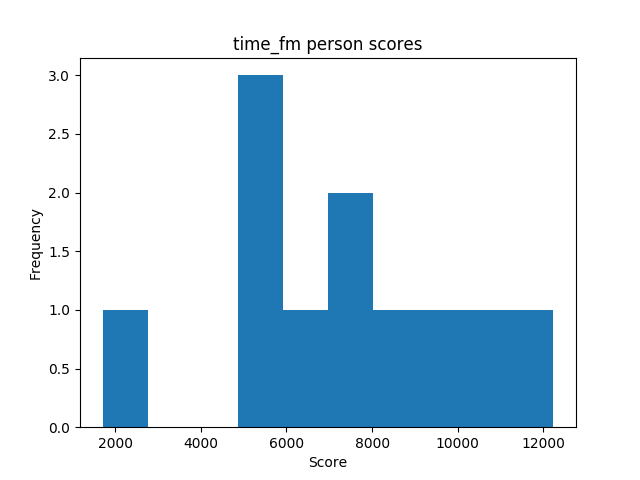
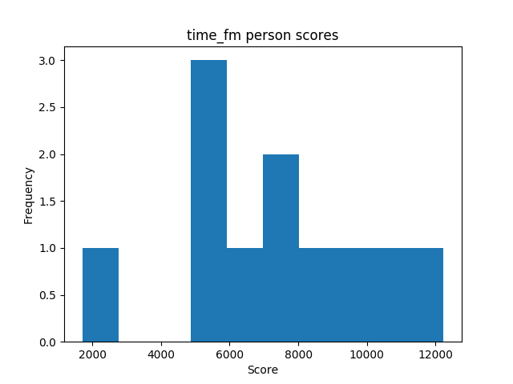
| sample | min | max | mean | variance | skew | kurtosis | normal-t | normal-p | α | |
|---|---|---|---|---|---|---|---|---|---|---|
| abs | 23 | 1426 | 16484 | 9283.95 | 14203173.83 | -0.31 | -0.29 | 0.544 | 0.7617 | 0.8591 |
| rel | 23 | 27 | 323 | 182.04 | 5460.66 | -0.31 | -0.29 | 0.544 | 0.7617 | 0.8591 |
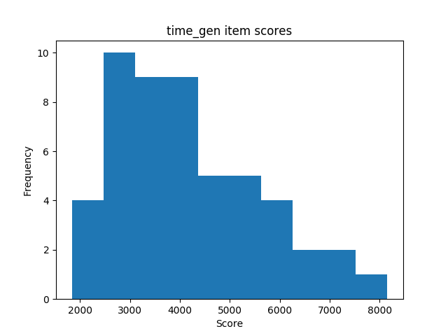 
| Mann-Whitney-U k | Mann-Whitney-U p | Welch's t-test k | Welch's t-test p | |
|---|---|---|---|---|
| abs | 0.619 | 0.5426 | 0.639 | 0.5324 |
| rel | 1.180 | 0.2513 | 1.220 | 0.2420 |
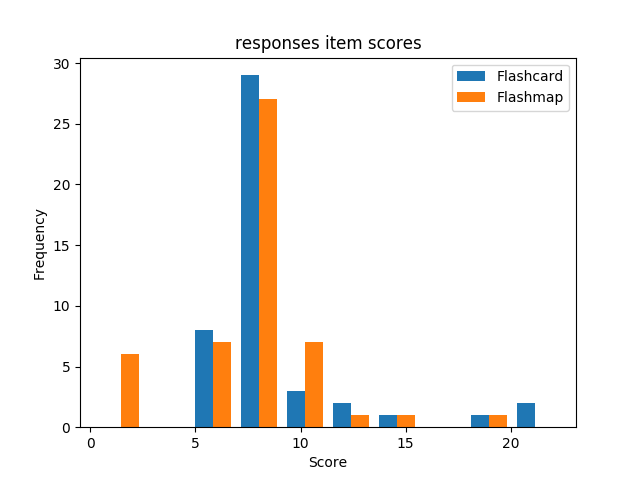 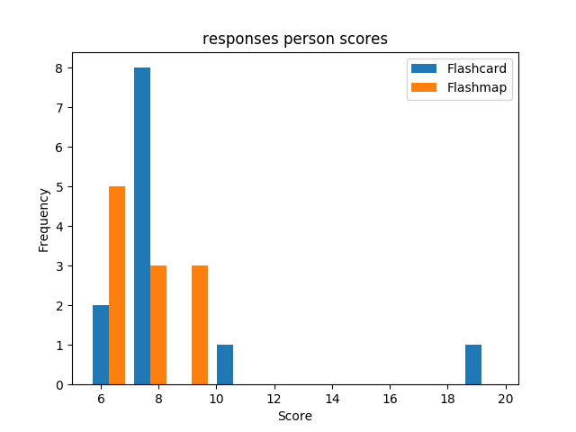
| Mann-Whitney-U k | Mann-Whitney-U p | Welch's t-test k | Welch's t-test p | |
|---|---|---|---|---|
| abs | -16.597 | 0.0000 | -15.857 | 0.0000 |
| rel | -16.421 | 0.0000 | -15.689 | 0.0000 |


| Mann-Whitney-U k | Mann-Whitney-U p | Welch's t-test k | Welch's t-test p | |
|---|---|---|---|---|
| abs | 7.924 | 0.0000 | 8.292 | 0.0000 |
| rel | 7.954 | 0.0000 | 8.324 | 0.0000 |
 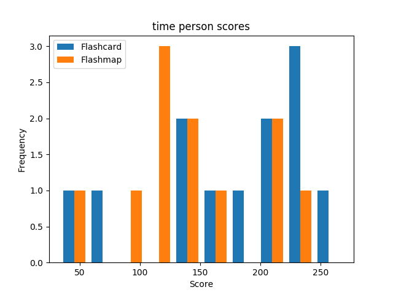
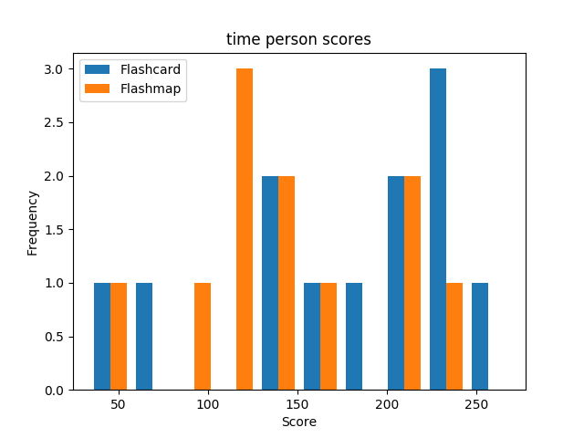